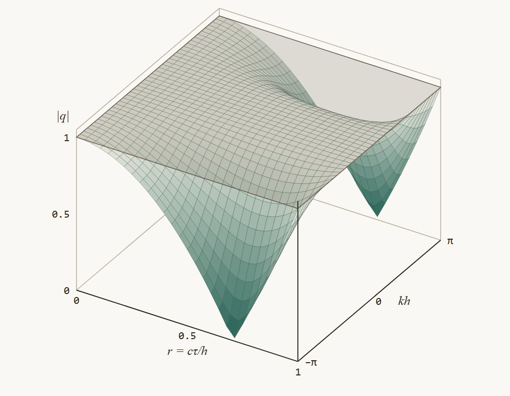
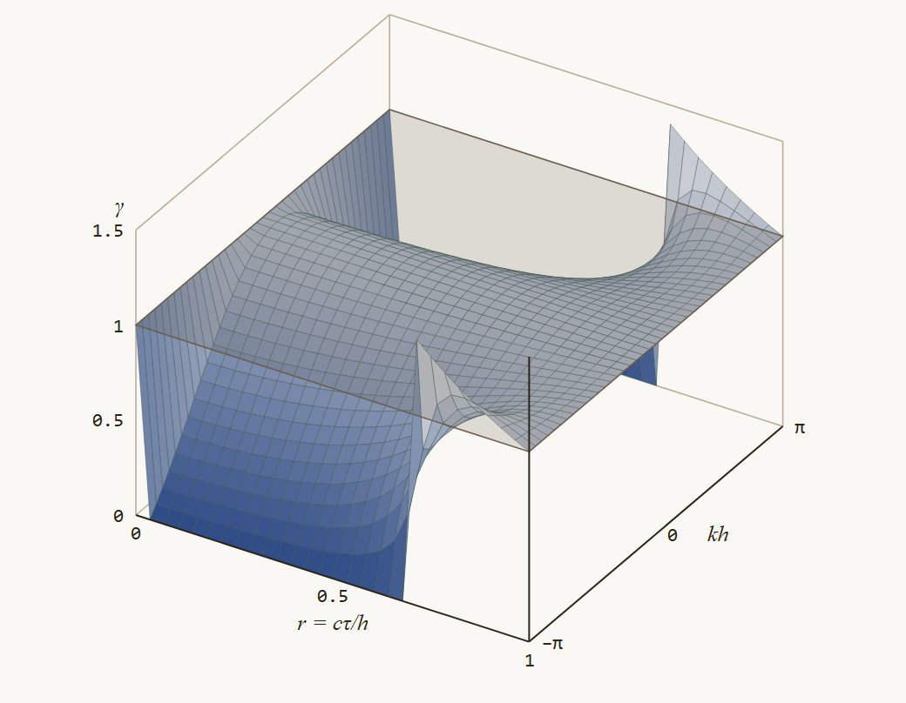

Диссипативные и дисперсионные свойства. Паспорт схемы
Бегущие волны · Модуль и аргумент множителя перехода · Поверхности · Связь с дифф. приближением · Тесты · «Уголок» и Лакс–Вендрофф
§4 · Определения: Г-форма и П-форма
Две формы дифференциального представления
Г-форма (§4.1). Подставим в схему гладкую функцию, разложим по Тейлору в узле \((x_j, t_n)\) и перенесём поправки направо:
\[ u_t + c\,u_x = \sum_{k+m\,\ge\,2}\alpha_{km}\,\partial_t^{\,k}\partial_x^{\,m}u \tag{5.0г} \]
\(\alpha_{km} = \alpha_{km}(\tau, h)\); уравнение равносильно схеме. Производные по \(t\) остаются, тип гиперболический — отсюда «Г».
П-форма (§4.3). Исключим производные по \(t\) следствиями уравнения \(u_t = -c\,u_x\), то есть \(u_{tt} = c^2u_{xx}\), \(u_{ttt} = -c^3u_{xxx}\), …
\[ u_t + c\,u_x = \sum_{m\,\ge\,2} b_m\,\partial_x^{\,m}u \tag{5.0п} \]
Тип параболический — отсюда «П». Это и есть ряд (5.0): \(\nu = b_2\), \(\beta = b_3\), \(\mu = b_4\).
Первое дифференциальное приближение — усечение на первом ненулевом члене. У схемы порядка аппроксимации \(p\) первый ненулевой коэффициент П-формы — это \(b_{p+1}\), поэтому \(\ u_t + c\,u_x = b_{p+1}\,\partial_x^{\,p+1}u\). Порядок схемы виден по номеру первой уцелевшей производной.
Дальше всюду работаем в П-форме: поведение решения читается по чётности производных, а это возможно, только когда справа одни производные по \(x\). Как обе формы получаются — на схеме второго порядка.
Пример · схема второго порядка
Лакс–Вендрофф: от Г-формы к П-форме
Схема 3 из задания §4, шаблон из трёх узлов по \(x\): \(\ \frac{u_j^{n+1} - u_j^n}{\tau} + c\,\frac{u_{j+1}^n - u_{j-1}^n}{2h} - \frac{c^2\tau}{2}\,\frac{u_{j+1}^n - 2u_j^n + u_{j-1}^n}{h^2} = 0.\)
У «уголка» \(p = 1\) и уцелела вторая производная, \(\nu = \frac{ch}{2}(1-r)\); здесь \(p = 2\), члена с \(u_{xx}\) нет вовсе, уцелела третья. Почему разложение можно было оборвать именно на третьей — следующий слайд.
Практика · докуда раскладывать
Сколько членов ряда нужно: ответ даёт интерполяционный полином
Схема на \(N\) узлах — значение интерполяционного многочлена степени \(N-1\) в основании характеристики \(x_j - c\tau\) (§5.10). Её погрешность за шаг — это погрешность интерполяции.
Схема берёт значение штриховой кривой вместо сплошной.
Погрешность интерполяции — ЧМ, §3.6, (3.17)
При \(u \in C^{N}\) найдётся \(\xi\):
\[ u(x) - P_{N-1}(x) = \frac{u^{(N)}(\xi)}{N!}\,\omega_N(x), \ \ \omega_N = \prod_i (x - x_i). \]
В точке \(x = x_j - rh\) каждый сомножитель равен \(-(r+k)h\), поэтому \(\omega_N \sim h^{\,N}\).
Проверка. \(N = 2\): \(\omega_2 = -r(1-r)h^2 \Rightarrow \nu = \frac{ch}{2}(1-r)\). \(N = 3\): \(\omega_3 = r(1-r^2)h^3 \Rightarrow \beta = -\frac{ch^2}{6}(1-r^2)\). Те же коэффициенты, что дало разложение по Тейлору.
Правило. Погрешность за шаг \(\sim h^{\,N}u^{(N)}\), после деления на \(\tau\) — член порядка \(h^{\,N-1}\): порядок схемы не выше \(N-1\), первый уцелевший член П-формы — \(\partial_x^{\,N}u\), дальше раскладывать незачем. Это оценка сверху: центральная явная на трёх узлах даёт лишь первый порядок.
§5 · Откуда и куда
От дифференциального приближения — к качеству схемы
Выпишем П-форму дифференциального представления для нашего уравнения переноса — это тот самый ряд, с которым будем работать весь параграф:
Не путатьРяд (5.0) описывает схему точно. Схема аппроксимирует исходное уравнение с порядком \(p\) (§2), а усечения ряда — с более высоким; отсюда и право читать численное решение по правой части (5.0).
Вопрос §5: что эти поправочные производные делают с решением? Ответ распадается надвое — и это два свойства схемы, которые мы будем измерять:
чётные
меняют амплитуду
профиль расплывается — численная диссипация
нечётные
меняют скорость
волны разной длины расходятся — численная дисперсия
Третий вопрос — при каких шагах амплитуды вообще не растут — это устойчивость, тема §6; число, которым её проверяют, получим уже здесь. Сначала — язык, на котором всё измеряется.
§5.0 · Почему гармоники
Гармоники выделены дважды: уравнением и схемой
Дальше всё занятие — про волны \(e^{i(\omega t - kx)}\). Они не выбраны из удобства: сначала их выделяет само уравнение переноса, а потом — любая однородная разностная схема.
у уравнения переноса
В уравнение \(u_t + c\,u_x = 0\) подставим \(u = De^{i(\omega t - kx)}\): \(i\omega u - ick\,u = 0\), откуда
\[ \omega = ck. \]
Амплитуда \(D\) не меняется, фаза бежит со скоростью \(c\) — одинаково при всех \(k\). А любой начальный профиль есть сумма таких волн (ряд Фурье), и уравнение линейно: знать судьбу каждой волны — знать всё решение.
у разностной схемы
Схема \(u^{n+1} = S\,u^{n}\) однородна по пространству, поэтому перестановочна со сдвигом \(T\colon u_j \mapsto u_{j+1}\): \(ST = TS\). Сеточная экспонента \(e_k = \{e^{-ikh\,j}\}\) — собственная для сдвига, \(Te_k = e^{-ikh}e_k\), а значит и для \(S\):
\[ S\,e_k = \lambda\,e_k. \]
Проверка: \(v = Se_k\), тогда \(Tv = T(Se_k) = S(Te_k) = e^{-ikh}v\); рекурсия \(v_{j+1} = e^{-ikh}v_j\) даёт \(v = v_0e_k\). □ Формально — лемма 1 §6.2.
Точное решение и решение схемы разложены по одному и тому же базису — их можно сравнивать гармоника за гармоникой. У уравнения волна не меняет амплитуду; у схемы за один шаг она умножается на число \(\lambda\). Вся дальнейшая работа — с этим числом.
Идея · почему чётные — амплитуда, а нечётные — фаза
Обещанное на слайде «Откуда и куда» — прямой подстановкой волны
Подставим бегущую волну \(u = D\,e^{i(\omega t - kx)}\) в дифференциальное представление (5.0). Ключ — n-я производная экспоненты: \(\partial^n u/\partial x^n = (-ik)^n u\); всё зависит только от чётности \(n\).
Чётные \(n = 2m\) — вещественные
\((-ik)^{2m} = (-1)^m\,k^{2m}\); \(u_{xx}, u_{xxxx}, \dots\) дают вещественные добавки в правую часть (5.0).
Нечётные \(n = 2m+1\) — чисто мнимые
\((-ik)^{2m+1} = (-1)^{m+1}\,i\,k^{2m+1}\); \(u_{xxx}, u_{xxxxx}, \dots\) — мнимые (с множителем \(i\)) добавки.
Подставим в (5.0), сократим на \(u\), разделим Re / Im:
Правило справедливо для любых порядков: 4-я, 6-я, … — амплитуда (тонкая диссипация \(\mu k^4, \dots\)); 5-я, 7-я, … — фаза. Порядок схемы = порядок первой ненулевой производной в правой части (5.0).
§5 · Что измеряем. План
Два числа на каждую гармонику. План: паспорт схемы
Итог трёх слайдов: действие схемы на гармонику — умножение на одно комплексное число \(\lambda\). А у комплексного числа ровно два параметра, и каждый отвечает за своё:
задаёт скорость гармоники; зависимость скорости от длины волны — численная дисперсия
1
Схема, шаблон, происхождение
интерполяция вдоль характеристики
2
Дифференциальное приближение
§4 → знаки \(\nu\), \(\beta\)
3
Характеристическое уравнение
\(\lambda\) через число Куранта и длину волны
4
Две поверхности
модуль и фазовая скорость над теми же параметрами
5
Тестовые расчёты
ступенька и гауссиан при разных числах Куранта
Одни и те же пять пунктов для каждой схемы — это паспорт схемы, структура атласа Головизнина–Соловьёва [1]. Пройдём его полностью для «уголка», затем для Лакса–Вендроффа.
§5.1 · Бегущие волны
Бегущие волны и множитель перехода
У уравнения \(u_t + cu_x = 0\) есть решения-волны \(u = De^{i(\omega t - kx)}\): подстановка даёт \(\omega = ck\) — все волны бегут вправо со скоростью \(c\). На сетке \(x_j = jh\), \(t_n = n\tau\):
Число \(\lambda = e^{i\omega\tau}\), на которое умножается бегущая волна при переходе на следующий слой, \(u_j^{n+1} = \lambda\,u_j^n\), — множитель перехода; \(kh \in [-\pi, \pi]\) — приведённое волновое число.
Уравнение на \(\lambda\), остающееся после сокращения общего множителя, — характеристическое уравнение схемы: \(\lambda = \lambda(r, kh)\).
Знак в показателе — соглашение атласа (волна вправо); в §6 гармоника будет записана как \(\lambda^ne^{i\alpha m}\), \(\alpha = kh\). На модуль выбор знака не влияет.
Вторая форма\((1-r)^2 + r^2 + 2r(1-r)\cos kh\), и \((1-r)^2 + r^2 = 1 - 2r(1-r)\); далее \(1 - \cos kh = 2\sin^2(kh/2)\). Поправка к единице — произведение множителя по \(r\) и множителя по длине волны.
Модуль — это амплитуда за шаг. Отсюда — область устойчивости и понятие диссипации.
§5.2 · Область устойчивости. Диссипация
Область устойчивости и численная диссипация
Число Куранта \(r\) принадлежит области устойчивости, если амплитуды всех волн не возрастают: \(|\lambda(r, kh)| \le 1\) при всех \(kh \in [-\pi, \pi]\).
Из (5.6): \(|\lambda| \le 1\ \forall kh \iff r(1 - r) \ge 0\), то есть
\[ r \in [0, 1]. \tag{5.7} \]
Если в области устойчивости \(|\lambda| = 1\) для всех волн, оператор бездиссипативен; иначе имеет место численная диссипация.
Определение 3 самодостаточно: это условие на амплитуды, ничего заранее знать не нужно. В §6 то же неравенство \(|\lambda| \le 1\) будет выведено из определения устойчивости §2 и названо условием Неймана.
Фаза \(\omega t - kx = \mathrm{const}\) движется со скоростью \(\omega/k\) — фазовой скоростью. Приведённая (т.е. отнесённая к эталонной скорости \(c\) точного уравнения) фазовая скорость
\[ \gamma(r, kh) = \frac{\mathrm{Re}\,\omega}{kc} = \frac{\arg \lambda}{\tau kc} = \frac{\arg \lambda(r, kh)}{r\cdot kh}. \tag{5.9} \]
Безразмерная величина; \(\gamma = 1\) — «волна бежит с эталонной скоростью»; \(\gamma \equiv 1\) для точного уравнения.
Зависимость фазовой скорости от длины волны — дисперсия. При \(\gamma < 1\) она нормальная (гармоника отстаёт от эталонной, бегущей со скоростью \(c\)), при \(\gamma > 1\) — аномальная (опережает).
Ветвь аргументаБерём непрерывную по \(kh\) ветвь с \(\arg \lambda \to 0\) при \(kh \to 0\) — иначе на поверхности появятся ложные разрывы.
Дисперсионная поверхность — график \(\gamma(r, kh)\) над той же областью.
§5.5 · Дисперсионная поверхность
Дисперсионная поверхность схемы «уголок»
Как читать
\(kh = 0\): касание единицы — длинные волны бегут верно;
Могут ли быть обе?
У «уголка», Лакса–Вендроффа, «креста» — нет: знак \(\beta\) один для всего спектра при фиксированном \(r\).
У Бима–Уорминга \(\beta = \tfrac{ch^2}{6}(1-r)(2-r)\) меняет знак при \(r = 1\) и \(r = 2\): в разных диапазонах \(r\) дисперсия разного типа.
У трёхслойных схем два корня характеристического уравнения дают две моды с разными знаками аргумента — тогда осцилляции появляются с обеих сторон сразу.
§5.6 · Связь с дифференциальным приближением
Дифференциальное приближение предсказывает оба свойства
Роли членовЧётная производная \(u_{xx}\) — только в амплитуде: \(e^{-\nu k^2 t}\), затухание при \(\nu > 0\), рост при \(\nu < 0\). Нечётная \(u_{xxx}\) — только в фазе: скорость \(c + \beta k^2\),
\[ \gamma \approx 1 + \frac{\beta}{c}k^2 = 1 - \frac{(kh)^2}{6}(1 - r)(1 - 2r). \tag{5.15} \]
СогласованиеРазложение точных (5.6), (5.9) при \(kh \to 0\) даёт ровно то же: \(|\lambda|^2 \approx 1 - r(1-r)(kh)^2 \approx e^{-2\nu k^2\tau}\).
Дифференциальное приближение проще для длинных волн, спектральный анализ точен для всех. Знак \(\nu\) сразу говорит, гасятся амплитуды или растут: \(\nu > 0\) — затухание, \(\nu < 0\) — раскачка.
Решение постоянно вдоль характеристик. Из узла \((x_j, t_{n+1})\) проведём характеристику назад: она приходит в \(x_A = x_j - rh\) на слое \(t_n\), и \(u_j^{n+1} = u(x_A, t_n)\). Интерполируем по узлам слоя \(t_n\):
линейно по \(x_{j-1}, x_j\) — получается «уголок»;
квадратично по \(x_{j-1}, x_j, x_{j+1}\) многочленом Лагранжа:
Паспорт, пункты 1–2Схема 3 из задания §4: явная, трёхточечная, порядок \(O(\tau^2 + h^2)\) на решении. П.д.п. не содержит \(u_{xx}\): схемной вязкости первого порядка нет; \(\beta = -\frac{ch^2}{6}(1 - r^2)\) — нормальная дисперсия.
Пункт 3 паспорта — характеристическое уравнение.
§5.10 · Характеристическое уравнение
Лакс–Вендрофф: \(\lambda\), модуль, область устойчивости
Сравните с «уголком»Область устойчивости та же, \(r \in [0,1]\). Но поправка к единице пропорциональна \(\sin^4(kh/2) \sim (kh)^4\), а не \(\sin^2 \sim (kh)^2\): диссипативная поверхность касается единичной плоскости с четвёртым порядком — «плотное прилегание» схемы второго порядка.
Пункт 4 паспорта — поверхности.
§5.10 · Поверхности Лакса–Вендроффа
Диссипативная и дисперсионная поверхности схемы Лакса–Вендроффа

а) \(|\lambda(r, kh)|\): плотное прилегание к единице при малых \(kh\)

б) \(\gamma(r, kh)\): нормальная дисперсия при всех \(r \in (0,1)\)
Рис. 5. Качественно — как у «уголка»; отличие — в порядке касания единичной плоскости и в знаке дисперсии (всюду нормальная, \(\beta = -\frac{ch^2}{6}(1 - r^2) < 0\)). Канал высокой точности — \(r = 1\).
§5.10 · Тесты: Лакс–Вендрофф
Тестовые расчёты: Лакс–Вендрофф
Сравнение двух паспортов
Гауссиан — почти без потерь: диссипация второго порядка мала; лёгкое отставание — нормальная дисперсия.
Ступенька — крутой фронт, но осцилляции позади: короткие волны затухают слабо и бегут медленнее длинных (\(\gamma < 1\)) — отстают и образуют хвост. У «уголка» это скрывала диссипация.
Чем меньше \(r\), тем сильнее осцилляции: при \(r = 0.25\) поверхность \(\gamma\) дальше от единицы.
Пила у разрывов — общее свойство линейных схем порядка \(\ge 2\): теорема Годунова (§9). Нормальная дисперсия — пила сзади, аномальная — спереди.
Дифференциальное представление: чётные производные → диссипация, нечётные → дисперсия; знак \(\nu\) — затухание или раскачка амплитуд.
Суперпозиция: поверхности предсказывают перенос любого профиля; канал высокой точности у \(r = 1\).
Паспорт: «уголок» — размазывает, монотонен; Лакс–Вендрофф — точен на гладком, осциллирует у разрывов.
Ключевой выводГладкие профили переносятся хорошо даже при умеренной диссипации; разрывные требуют выбора числа Куранта и, в конечном счёте, схем, устроенных иначе (§8–§10).
Дальше§7 — метод неопределённых коэффициентов: как строить схемы с нужными свойствами. §9 — теорема Годунова.